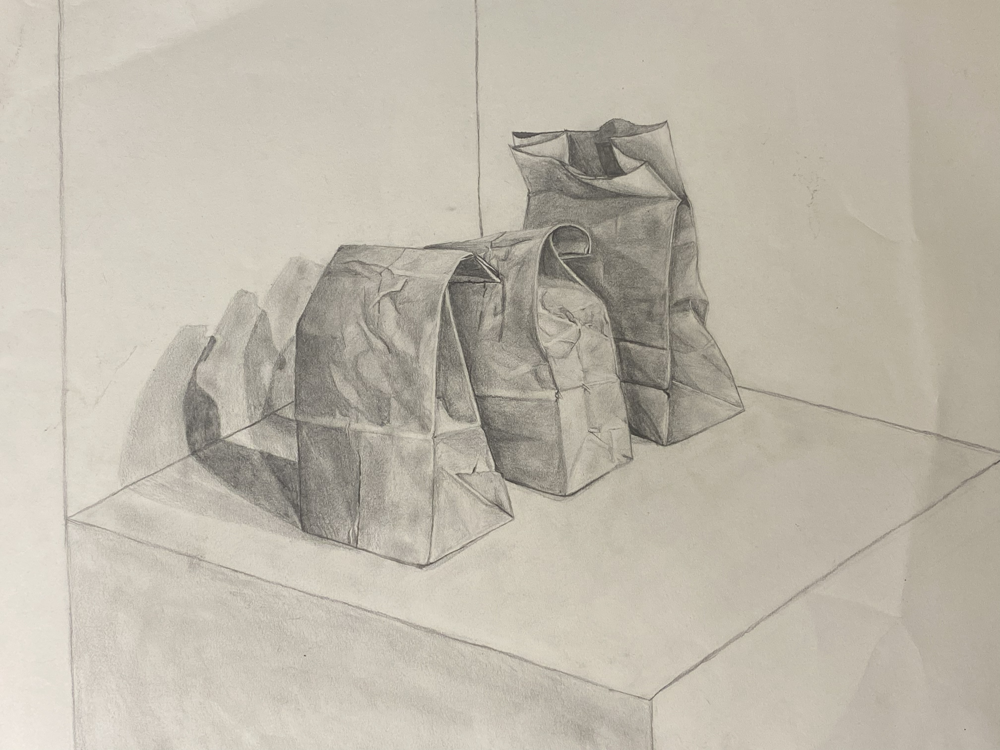
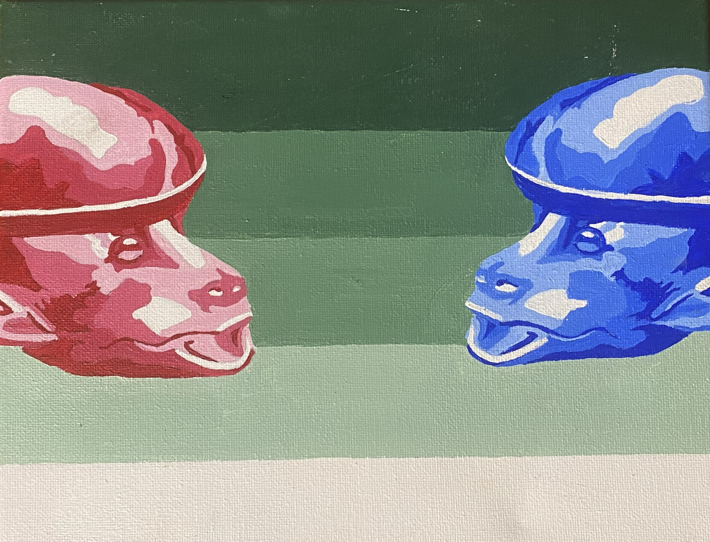
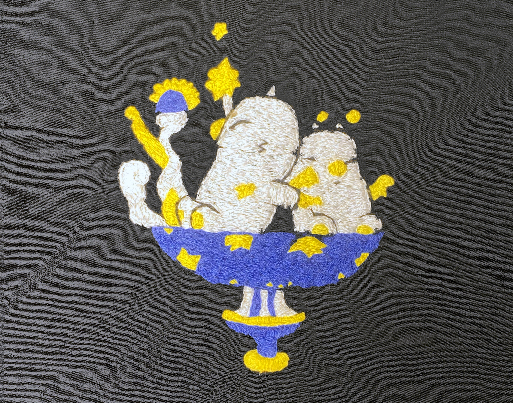
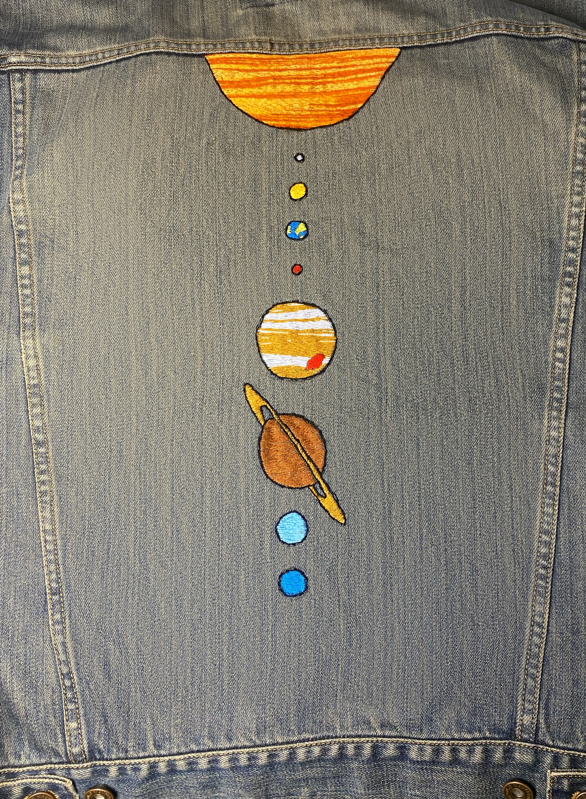

Writing and Art
A collection of my poems, essay, and art
Poetry
Sweet Dreams on Ultra Nightmare
10:00
We’re both awake
They throw in the disk, load it up and
The once unfamiliar voice begins to speak
“Against all the evil that hell can conjure…”
I lean toward their lap,
They make their way through the introduction fodder.
I watch in awe as they navigate through
Derelict halls oozing with flesh
Festering behind iron bars.
Progressing with relative ease.
11:00
Starting to feel sleepy but I will myself to stay awake
so I can see how far they make it this time
“Can you time me for this one?”
I wait for the exact second
“...Rip and tear…”
Start the timer
Back into the halls
A demon comes up from behind and
I will myself to stay awake
so I can see how far they make it this time
12:00
The line between consciousness and sleep
Begins to blur but I know they can make it this time
“Do you think Ican makeitif Itriedfngirigirsing?”
I can’t quite make out the question, but I still
Voice my support “yeah, go for it.”
They’re either in the beginning or middle of the level
I can’t tell.
The flesh has warped into red blobs,
The demons: flashes of a deeper hue
I let myself blink for a few extra seconds
1:00
I wake up in their lap
Half the screen is blocked by their hands but
It doesn’t matter because
It’s nothing more than an indiscernible cacophony of
Red screams grunts blue weeping and gnashing of teeth
“Do you wanna go to bed?”
They die because they look at me
I can hardly stay awake to watch them restart but
I hear the familiar voice begin again
I close my eyes and say no because
“...Until it is done.”
I know they can make it this time
My personal Ballroom
As I sang the song that played in my head,
I grabbed my nearest dance partner and twirled about the room.
Suddenly I was in a grand ballroom,
and I was dancing with a prince.
Gowns of all colors, filled with news of the latest gossip,
glided about one another trading rumor for rumor
until they bubbled over, giggling to signify the secrets they’ve learned.
The gowns blurred together as the music grew louder, and the dancing quickened.
Perhaps my voice, as out-of-tune as a guitar of rubber bands,
is not the kind of vocals the guests would hope for.
Perhaps Led Zeppelin's “Stairway to Heaven”,
is not a proper ballroom ballad.
Perhaps my dancing, consisting wholly of spinning and stumbling,
is not the most technical execution of the Waltz.
Perhaps my cat Schnitzel, who hobbles around with the appearance of a permanent wedgie,
is not a royal heir to the throne.
And perhaps my house, lacking space for more than ten guests,
is not a place where a ball ought to be held.
But I sang and danced anyway,
Ignoring my sister’s ridicule as I finished the song.
Creations of a Pioneer Hunter
The woods, to an outsider, all look the same,
Pine trees everywhere,
Only deer paths to offer guidance,
Mosquitos, deer flies, and locusts swarm the swampy forest,
Buzzing around our heads in maddening patterns.
My grandpa and I dove deeper into the woods,
Finally reaching the blind that I helped build.
Pieced together with rusty nails that might have come from the Bronze Age.
We climbed the creaky ladder,
Only able to remain vertical due to the rope that tied it to the tree.
It’s clear once inside, grandpa hunts in comfort.
A rug covered the floor,
Insulation coated the wall to keep it warm,
A well-worn recliner stood out as the centerpiece of the glorified tree fort.
Wire gauze covered the windows,
Strong enough to keep the swarms from entering,
Weak enough to allow a bullet to exit.
We peered out,
Scanning the woods for all the contraptions he had engineered.
A Febreeze sprayer full of doe urine out to our right,
Set to release the rancid odor every fifteen minutes.
A deer call strapped to a long hose, snaked from the recliner to the forest floor
So he can remain in luxury, while calling deer from the ground.
And directly out the front window was an automatic feeder
Set to release corn during the hours allotted for hunting.
Even with all of the gadgets,
He has not yet maimed a deer.
But he keeps inventing anyway,
Perhaps to increase his odds,
Or maybe just to engage the zealous mind of an old man.
Frog Hats
Every summer we would scour the grass.
Pulling that rusty green wagon all over the yard,
In search of the ostensible frog hats.
With many oak trees, they weren’t difficult to find.
The hard part was prying them apart
To throw out the bottom, and keep the top.
The acorn berets quickly became a mound.
Spilling over the edge of the wagon
Until we were sure we had enough.
When we went in for the night we would leave the wagon out.
I would imagine a line of frogs standing behind the wagon,
Waiting their turn to collect their trendy new hats.
The tradition has faded away,
As I grow up and my grandpa grows old,
But whenever I see an acorn laying around,
I hope there’s a frog about to find a new hat not far behind.
Back to top
Essays
Mislabeled: A tale of Charles Dickens
Read Here"Charles Dickens was well known for his characters that often embodied a grotesque and whimsical nature. His characters were often unrealistic personifications of the societal problems that he found to be the most prominent. While some of his works could be described as dark, the characters were typically stretched just far enough from reality to retain their whimsy.
The characters of Hard Times, however, were far less whimsical than any character that Dickens had previously created; these characters were so grotesque and dreary that for a while after publication, many critics avoided addressing the novel directly.
Dickens completed Hard Times in 1854, and still in 1948, a critic named F R Leavis lamented that Hard Times was the greatest of all Dickens’ novels, yet “in the books and essays on Dickens, so far as I know them, it is passed over as a very minor thing” (Leavis 364).
Slowly, once it did begin to gain critical attention; critics began to question the accuracy of what Dickens believed to be strictly Utilitarian characters: Thomas Gradgrind and Josiah Bounderby..."
The Necesity of Induction
Read Here"Within Philosophy of Science, philosophers have come to find the use of induction in science to be problematic. According to Karl Popper, the problem of induction is this:
“People who say of a universal statement that we know its truth from experience usually mean that the truth of this universal can somehow be reduced to the truth of singular ones, and that those singular ones are known by experience to be true;
which amounts to saying that the universal statement is based on inductive inference”. (2013, 407)
The problem that philosophers have with this is that it implies that there is an inability to be certain in any attempt to understand universal truths or laws.
This essay will look at induction in terms of noumena and phenomena, as well as argue that the problem of induction is one that is inevitable; it cannot, and need not be ‘solved’..."
Back to top
Multimedia Art
"Lunchtime Anticipation"

Pencil on Paper
"Ready to Make Adjustments to your Garments"

Acrylic on Canvas
"Moogle Chalice"

Embroidery on Fabric
"I think You're Missing One?"

Embroidery on Denim
Back to top